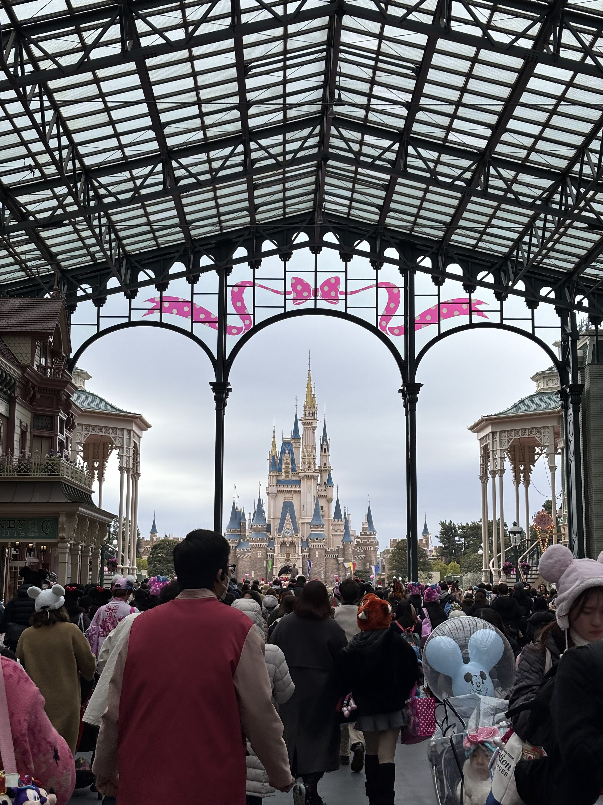
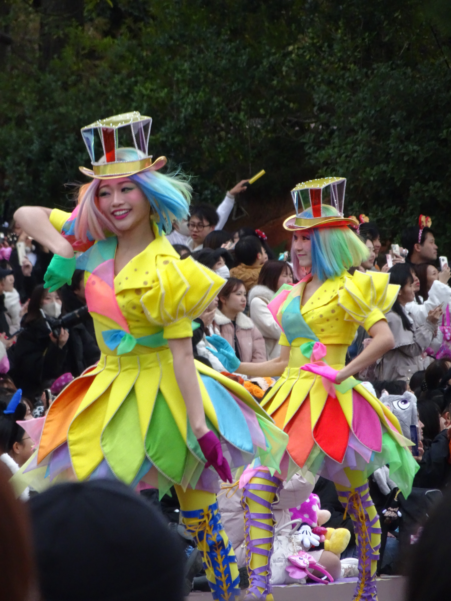
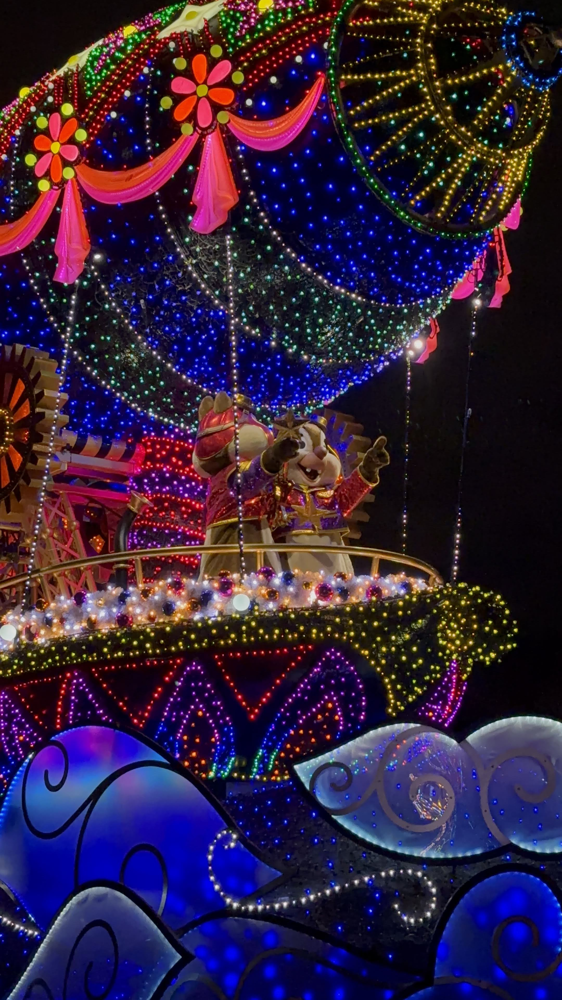

Tokyo Disneyland
砂上の荒野に夢の王国を築いた先駆者たちと本物への誓い
I. Muddy Ground to Holy Land — 砂上の王国と伝説の膝詰め談判
現在の千葉県浦安市舞浜。世界でも屈指の美しさと完成度を誇るディズニーリゾートが広がるこの場所は、1960年代初頭まで、海苔や貝類の養殖で生計を立てる血気盛んな漁師たちの広大な海でした。住民の7割近くが漁民であったこの「漁師の街」に、海を埋め立てて巨大レジャーランドを誘致するという大構想が持ち上がったところから、王国の歴史は動き出します。
漁民交渉と高橋政知の凄まじき人間力
当時、水質汚染の影響などで揺れていた漁民たちは、当然ながら生活の糧である漁業権を手放すことに猛烈に反対していました。この最大の難関を乗り越えるべく、オリエンタルランドの交渉役（後に2代目社長）として白羽の矢が立ったのが、高橋政知（まさとも）でした。
高橋の交渉術は、冷徹な利害計算などではなく、腹を割った熱い血の通うものでした。彼は浦安の町に深く入り込み、漁民たちと連日連夜にわたって大酒を酌み交わしました。料亭に組合の幹部たちを招き、人としての絶対的な信頼関係を築き上げていったのです。この剛腕かつ温かい膝詰め談判により、交渉開始直後の1961年には（膠着していた状況から）急速に話し合いの席が設けられ、その後の約10年にわたるタフな補償交渉を経て、全面妥結へと至る偉大な一歩を踏み出すことになりました。

海の記憶から夢の地平へ
埋め立て事業はその後順調に進行し、かつての遠浅の海は、世界に誇るディズニーランド建設のための静かな砂のキャンバスへと姿を変えました。私たちが現在、何気なく踏みしめるエントランスの赤レンガや美しい並木道（上の画像）は、かつての漁民たちの決断と、高橋政知の圧倒的な人間力がなければ、決して生まれることのなかった奇跡の地平なのです。
II. Devotion to Authenticity — 「本物」への執念と膨らむ熱情
米国のディズニー社との度重なるタフな交渉を経て、1980年12月、ついに東京ディズニーランドの建設工事が着工しました。しかし、そこからがもう一つの戦いの始まりでした。
「いくら金がかかってもいい、本物を作れ」
当初、総事業費は1,000億円程度で見込まれていました。しかし、日本に本物の夢の世界をもたらすために「妥協なきディズニー・クオリティ」を徹底的に追求していった結果、事業費はみるみるうちに跳ね上がり、最終的には1,800億円（現在の価値に換算すればさらに巨額）にまで膨れ上がったのです。
資金難に頭を抱える周囲を前に、高橋政知は現場のスタッフたちにただこう言い放ちました。
プラスチックのイミテーションではなく、実際の樹木を植え、壁紙の一枚に至るまで米国のオリジナルと同じ技法を駆使して塗り固める。「偽物」を徹底的に排除したこのウォルト・ディズニーの哲学を完璧に引き継ぐ熱情こそが、のちに開業初年度から1,000万人を超えるゲストを動員する熱狂を生み出すことになりました。
1983年4月15日の雨音
そして迎えた開園当日。あいにくの雨模様でしたが、高橋たちが創り上げた王国のゲートが静かに開かれました。雨の中に鳴り響くマーチングバンドの音とゲストの歓声が、20年以上の歳月をかけて誘致にすべてを捧げた男たちの情熱を祝福したのです。
III. Pioneers of Dream — 砂上に魔法をかけた4人の創生者
海を越え、国境を越え、日本に世界初の海外ディズニーランドを創生した先駆者たち。各肖像をタップすることで、彼らが王国の誕生に果たした情熱とこだわりを覗くことができます。
IV. Covered Street — 雨と四季が創り出した「ワールドバザール」の秘密
東京ディズニーランドのゲートをくぐり、誰もが最初に足を踏み入れるヴィクトリア様式の美しい街並み。世界各国のディズニーパークではこのエリアを「メインストリートU.S.A.」と呼びますが、東京にのみ**「ワールドバザール（World Bazaar）」**という特別な名称が付けられています。
20世紀初頭のアメリカの温かい木造建築を再現しながらも、なぜ東京だけがその「ストリート」の名称を廃したのでしょうか。そこには、日本の美しき「四季」と、時折訪れる過酷な「雨」に対応するための、イマジニアたちの精緻な設計の工夫がありました。

ガラスの屋根：オールウェザーカバー
最大の特徴は、エリア全体を包み込む巨大なガラスの屋根、通称「オールウェザーカバー」です。梅雨や台風、秋雨、冬の冷たい北風など、雨の多い日本特有の気候からゲストを守り、いつでも快適にショッピングや散策を楽しめるようにするために設計されました。
この巨大な天蓋で覆われたことで、エリアは「通り（ストリート）」という屋外空間から、ひとつの巨大な「屋根付き市場（バザール）」のような没入感のある屋内構造へと変化しました。そのため、米ディズニー社とオリエンタルランドは議論を重ね、「ワールドバザール」というオリジナルのテーマランド名へと変更したのです。
遠近法が紡ぐシンデレラ城への距離感
ワールドバザールを歩く際、シンデレラ城へ向かうにつれて「通りの幅」が徐々に狭くなっていることに気づくでしょうか。これもイマジニアが仕掛けた遠近法のトリック（強制遠近法）です。エントランスから見るとシンデレラ城は実際よりも遠く、より壮大に見え、逆に帰り道にお城側からエントランスを振り返ると、出口が近く感じられるように設計されています。さらに、建物の1階から2階、3階へと上がるにつれて、窓や装飾のサイズをあえて小さくすることで、建物自体の高さを視覚的に強調する工夫もなされています。
V. Dynamic Lights — 光と色彩が紡ぐエンターテインメントの進化
1983年の誕生から現在に至るまで、東京ディズニーランドは「永遠に完成しない」というウォルト・ディズニーの約束を忠実に守り続けてきました。そしてその進化が最も華やかに体現されているのが、日々パークの道を塗り変えるエンターテインメント、すなわちパレードの変遷です。

祝祭の色彩：ハーモニー・イン・カラー
近年、パークの昼を彩るパレードとして多くのゲストを魅了している「ディズニー・ハーモニー・イン・カラー」（上の画像）。このパレードは、まさに「色鮮やかな調和（ハーモニー）」をテーマにしています。ダンサーたちの衣装に見られる、一切の隔たりのない「虹色のグラデーション」は、多様な個性が重なり合い、共に新しい未来を描いていくという現代のディズニーが誇る平和のメッセージそのものです。

幻の光の叙事詩：「ディズニー・ファンティリュージョン！」
東京ディズニーランドの夜を象徴するエレクトリカルパレードですが、実はその光の歴史には、一時的な「休止」と、その間に夜空を焦がしたもう一つの伝説のパレードが存在しました。1995年、初代エレクトリカルパレードが多くのゲストに惜しまれながら一度その幕を閉じた後、新たにスタートしたのが『ディズニー・ファンティリュージョン！』（1995〜2001年）です。
ファンティリュージョンは、初代Eパレの軽快な電子音とは一線を画す、クラシックオーケストラによる重厚でドラマチックなシンフォニーが最大の特徴でした。その音楽を手掛けたのは、米国や東京の伝説的ナイトエンターテインメント『ファンタズミック！』の作曲者としても名高い、ブルース・ヒーリー（Bruce Healey）氏。重厚で、美しく、どこかミステリアスな旋律はまさに「これぞディズニー（The Disney）」と呼ぶにふさわしい、圧倒的な格調高さを湛えていました。
惜しくも約6年という短い期間で公演を終えてしまったため、当時を直接知らない若い世代や音楽ファンからは「一度でいいから生で体感したかった」と、その劇的なメロディを惜しむ声が今なお絶えません。しかし、闇が光に打ち勝つ壮大なストーリーと音楽の記憶は、パークの歴史に深く刻み込まれています。
進化を続ける「ドリームライツ」と季節の魔法
そして2001年、ファンティリュージョンの志を引き継ぎつつ、現在の「東京ディズニーランド・エレクトリカルパレード・ドリームライツ」がデビュー。最新のLED技術を駆使したこのパレードは、誕生から現在に至るまで数年おきにフロートやキャラクターの追加・リニューアルを繰り返し、常に「最新の夜の魔法」を見せ続けています。
さらに、冬の訪れとともに訪れるクリスマス期間には、おなじみのテーマ曲にクリスマスソングが美しく織り交ざり、キャラクターたちがサンタクロースやトナカイの特別仕様の装いを纏う「クリスマス・バージョン」が運行されます。季節ごとの温かい魔法が夜の運河を照らし、私たちの心に絶え間ない感動を届け続けているのです。
夕暮れのセンチメンタルな余韻から、光と色彩の調和、部署や星々を越えて響き合う「宇宙的な友情」が幸福に融け合い、時空を超えた文化の架け橋が今日も静かに流れています。この美しいストーリーラインは、砂上の海辺から夢の帝国を創り上げた偉人たちの情熱が、今も生き生きとこの地に呼吸し続けている証なのです。